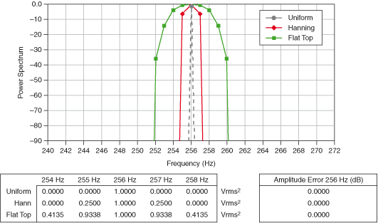

Applying a smoothing window to a time-domain signal multiplies the time-domain signal by the length of the smoothing window and introduces distortion effects due to the smoothing window. The smoothing window changes the overall amplitude of the signal. When applying multiple smoothing windows to the same signal, scaling each smoothing window by dividing the windowed array by the coherent gain of the window results in each window yielding the same spectrum amplitude result within the accuracy constraints of the window. The following figures are the result of applying scaled smoothing windows to the time-domain signal.


An FFT is equivalent to a set of parallel filters with each filter having a bandwidth equal to Δf. Because of the spreading effect of a smoothing window, the smoothing window increases the effective bandwidth of an FFT bin by an amount known as the equivalent noise-power bandwidth (ENBW) of the smoothing window. The power of a given frequency peak equals the sum of the adjacent frequency bins around the peak increased by a scaling factor equal to the ENBW of the smoothing window. You must take the scaling factor into account when you perform computations based on the power spectrum.
The following table lists the scaling factor, also known as coherent gain, the ENBW, and the worst-case peak amplitude accuracy caused by off-center components for several popular smoothing windows.
| Window | Scaling Factor (Coherent Gain) | ENBW | Worst-Case Amplitude Error (dB) |
|---|---|---|---|
| Rectangular (none) | 1.00 | 1.00 | 3.92 |
| Hanning | 0.50 | 1.50 | 1.42 |
| Hamming | 0.54 | 1.36 | 1.75 |
| Blackman-Harris | 0.42 | 1.71 | 1.13 |
| Exact Blackman | 0.43 | 1.69 | 1.15 |
| Blackman | 0.42 | 1.73 | 1.10 |
| Flat Top | 0.22 | 3.77 | <0.01 |